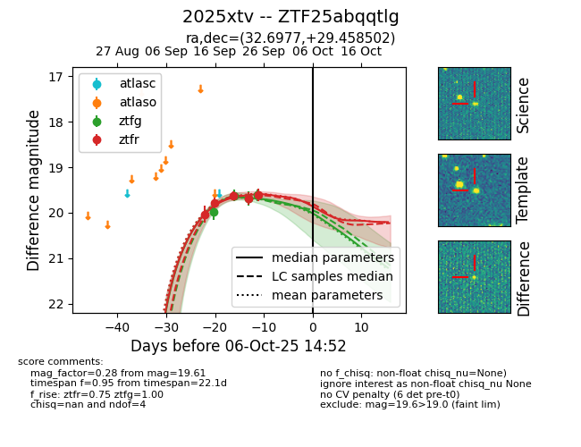
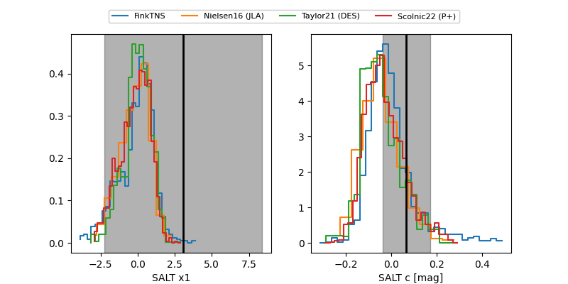

FINK: ZTF25abqqtlg
Lasair: ZTF25abqqtlg
ALeRCE: ZTF25abqqtlg
TNS: 2025xtv
YSE: 2025xtv
ZTF25abqqtlg (ztf,fink)
2025xtv (tns,yse)
equatorial (ra, dec) = (32.6977,+29.45850)
galactic (l, b) = (142.9477,-30.31048)


last ztfg=19.62, ztfr=19.61
3 ztfg, 5 ztfr detections